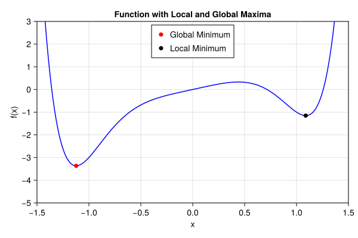
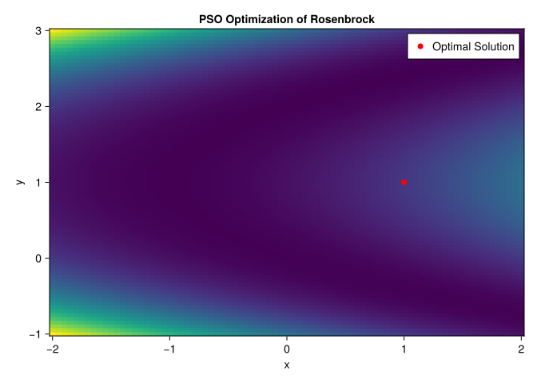
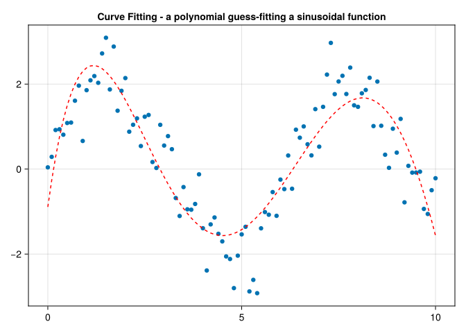

Far better an approximate answer to the right question, which is often vague, than an exact answer to the wrong question, which can always be made precise. - John Tukey, 1962
17.1 In This Chapter
Optimization as root finding or minimization/maximization of defined objectives. Differentiable programming and the benefits to optimization problems. Other non-gradient based optimization approaches. Model fitting as an optimization problem.
17.2 Introduction
Local and global optimization: A local optimum value refers to a solution where the objective function (or cost function) has the best possible value in a neighborhood surrounding that solution. A global optimum value, on the other hand, is the best possible value of the objective function across the entire feasible domain. For smooth and convex functions, the gradient points towards the global minimum (or maximum), making it extremely efficient for finding the optimal solution. Even for non-convex functions, the gradient provides valuable information about the direction to move towards improving the objective function value locally.
usingCairoMakieletf(x) = x^8-3x^4+ x# Generate a range of x and y values xs =range(-1.5, 1.5, length=300) ys =f.(xs) fig =Figure(resolution=(600, 400)) ax =Axis(fig[1, 1], xlabel="x", ylabel="f(x)", title="Function with Local and Global Maxima", limits=(-1.5, 1.5, -5, 3) )lines!(ax, xs, ys, color=:blue) x_global_max =-1.1226scatter!(ax, [x_global_max], [f(x_global_max)], color=:red, markersize=10, label="Global Minimum" ) x_local_min = [1.08835]scatter!(ax, x_local_min,f.(x_local_min), color=:black, markersize=10, label="Local Minimum" )# Add a legendaxislegend(ax, position=:ct) figend
┌ Warning: Found `resolution` in the theme when creating a `Scene`. The `resolution` keyword for `Scene`s and `Figure`s has been deprecated. Use `Figure(; size = ...` or `Scene(; size = ...)` instead, which better reflects that this is a unitless size and not a pixel resolution. The key could also come from `set_theme!` calls or related theming functions.
└ @ Makie ~/.julia/packages/Makie/ux0Te/src/scenes.jl:238

Optimization techniques are incredibly important and find uses in many areas:
Machine learning relies on “training”, which is essentially optimizing parameters to match target data.
Determining parameters for market consistent models where the modeled price is fit to market-observed prices.
Minimizing a certain risk outcome by optimizing asset allocations
Maximizing risk-adjusted yield in a portfolio.
We will introduce some basic concepts and categories of optimization techniques in this chapter:
Objective and Loss Functions
Optimization Techniques
Nonlinear Optimization
Gradient Based Techniques
Bracketing Methods
Other Techniques
Linear Optimization
Below is an expanded version of the section that aims to be more thorough while keeping the writing concise and direct.
17.3 Objective and Loss Functions
Any optimization algorithm needs to know what is being optimized. We call this function the objective function. Usually, the objective function is something we want to minimize—though maximizing a function is mathematically equivalent to minimizing its negative. Concretely, if you want to maximize \(f(x)\), you can minimize \(-f(x)\). The optimal point (also known as the \(\arg\min\)) is simply the input value that produces the smallest objective value.
In many practical situations—especially those with noisy or uncertain data—the function we want to optimize is called a loss function. This term is common in statistical modeling and machine learning, where the aim is to measure how far a model’s predictions deviate from real observations. For instance, the following squared loss function computes the sum of squared errors between a model’s predictions and the targets:
Here, guess might represent model parameters (or input values), and target is the observed data. Minimizing this loss aligns the model’s predictions with reality as closely as possible.
17.4 Optimization Techniques
17.4.1 Non-Linear Optimization
Non-linear optimization refers to problems where the relationship between the inputs and outputs is not constrained to be a linear relationship, which is incredibly common in financial modeling.
In many financial settings, variables must obey certain bounds or relationships (e.g., portfolios cannot exceed a total budget, a particular risk measure must remain below a threshold). Handling constraints often involves methods like Lagrange multipliers, projected gradient, or analytic penalty functions. We won’t cover these in depth here, but be aware that most general optimization libraries can handle constraints in non-linear problems as well.
17.4.1.1 Gradient-Based Optimization
The most efficient non-linear optimization algorithms tend to utilize the gradient (i.e. muti-variable derivative) in order to make the optimization substantially more efficient. The gradient is useful because it can tell you if you are at a maxima or minima (when the derivative is zero, the function is at a maxima or minima), but also because algorithms can be ‘smarter’ about searching for a solution using the additional information. The gradient provides the direction of the steepest ascent of a function. Optimization algorithms often iteratively update parameters in the direction opposite to the gradient (for minimization problems), which tends to converge towards a local minimum (or maximum for maximization problems). Besides, computing the gradient is often computationally feasible and relatively inexpensive compared to other methods for determining function behavior, such as higher-order derivatives or finite-difference methods. Beyond just the direction, the magnitude (or norm) of the gradient also indicates how steep the function change is in that direction. This information is used to adjust step sizes in optimization algorithms, balancing between convergence speed and stability.
Calculating gradients in the context of computer algorithms is discussed at length in Chapter 16, but a quick recap of the available approaches:
Finite differences: evaluate the function at nearby points and determine the rates of change associated with each change in direction. This
Analytic derivatives: A human-derived or computer tool (such as Mathematica) is able to analytically determine a derivative that is coded into the optimization algorithm
Automatic differentiation (AD): elementary rules are applied to decompose elementary code operations into derivatives, allowing for very efficient computation of complex algorithms.
To compare the approaches, here is an example of determining the derivative of a simple function at a certain point:
usingZygote# Define a differentiable functionf(x) =3x^2+2x +1# Define an input valuex =2.0finite_diff = (f(x +0.001) -f(x)) /0.001println("Value of f(x) at x=", f(x))1println("Gradient of f(x) at x=", finite_diff)2println("Gradient of f(x) at x=", gradient(f, x))3println("Gradient of f(x) at x=", 6* x +2)
1
A finite-difference approach to determining a gradient. Note that this method required two function calls of f to calculate an approximation.
2
An automatic, exact derivative determined by the rules in the Zygote library.
3
An analytic derivative using a user-coded derivative.
Value of f(x) at x=17.0
Gradient of f(x) at x=14.002999999998877
Gradient of f(x) at x=(14.0,)
Gradient of f(x) at x=14.0
17.4.1.1.1 Root finding
Root finding, also known as root approximation or root isolation, is the process of finding the values of the independent variable (usually denoted as \(x\)) for which a given function equals zero. In mathematical terms, if we have a function \(f(x)\), root finding involves finding values of \(x\) such that \(f(x)=0\).
There are various algorithms for root finding, each with its own advantages and disadvantages depending on the characteristics of the function and the requirements of the problem. One notable approach is Newton’s method, an iterative method that uses the derivative or gradient of the function to approximate the root with increasing accuracy in each iteration.
We will again use a simple function to illustrate the process:
usingZygote# Define a differentiable functionf(x) =2x^2-3x +1# Define an initial valuex =0.0# tolerance of difference in valuetol =1e-6# maximum number of iteration of the algorithmmax_iter =1000iter =0whileabs(f(x)) > tol && iter < max_iter x -=f(x) /gradient(f, x)[1] iter +=1endif iter == max_iterprintln("Warning: Maximum number of iterations reached.")elseprintln("Root found after ", iter, " iterations.")endprint("Approximate root: ", x)
Root found after 5 iterations.
Approximate root: 0.4999999998835846
Although it might look different, root-finding (solving (g(x)=0)) can be cast as a minimization problem by defining an objective function such as ( (g(x))^2 ). In this view, driving ( (g(x))^2 ) to zero compels ( g(x) ) itself to be zero, so the methods and algorithmic ideas from minimization apply naturally to root-finding scenarios as well.
17.4.1.1.2 BFGS
BFGS—named for Broyden, Fletcher, Goldfarb, and Shanno—is a popular member of the quasi–Newton family of optimization algorithms. Although it does require first‐order gradient information, BFGS does not need the exact Hessian (i.e., second derivatives). Instead, it updates an approximation to the inverse Hessian at each step using the gradients from previous iterations. This extra curvature information allows BFGS to converge much faster than steepest descent in practice. Moreover, because it never explicitly forms the full Hessian matrix, it remains efficient for moderately sized problems. In finance and actuarial settings, BFGS can be especially useful for model calibration or parameter estimation tasks where one needs to handle nonlinear functions relatively quickly but cannot afford the computational overhead of second derivatives.
The following example uses the Optim package available in Julia to do the BFGS optimization. We don’t illustrate the complete algorithm as it is a bit longer, but wanted to ensure that this workhorse of an algorithm was mentioned.
usingOptim# Define the objective function to minimizefunctionobjective_function(x)returnsum(x .* x)end# Initial guess for the minimizationinitial_x = [1.0]# Perform optimization using BFGS methodresult =optimize(objective_function, initial_x, BFGS())# Extract the optimized solutionsolution = result.minimizerminimum_value = result.minimum# Print the resultprintln("Optimized solution: x = ", solution)println("Minimum value found: ", minimum_value)
Optimized solution: x = [-6.359357485052897e-13]
Minimum value found: 4.0441427622698303e-25
17.4.1.2 Gradient-Free Optimization
This category includes algorithms that do not rely on gradients or derivative information. They often explore the objective function using heuristics or other types of probes to guide the search.
17.4.1.2.1 Bracketing Methods
A bracketed search algorithm is a technique used in optimization and numerical methods to confine or “bracket” a minimum or maximum of a function within a specified interval. The primary goal is to reduce the search space systematically until a satisfactory solution or range containing the optimal value is found.
functionbisection_method(f, a, b; tol=1e-6, max_iter=100)""" Bisection method to find a root of the function f(x) within the interval [a, b]. Parameters: - f: Function to find the root of. - a, b: Initial interval [a, b] where the root is expected to be. - tol: Tolerance for the root (default is 1e-6). - max_iter: Maximum number of iterations allowed (default is 100). Returns: - root: Approximate root found within the tolerance. - iterations: Number of iterations taken to converge. """ fa =f(a) fb =f(b)if fa * fb >0error("The function values at the endpoints must have opposite signs.")end iterations =0while (b - a) /2> tol && iterations < max_iter c = (a + b) /2 fc =f(c)if fc ==0return c, iterationsendif fa * fc <0 b = c fb = fcelse a = c fa = fcend iterations +=1end root = (a + b) /2return root, iterationsend# Define the function we want to find the root offunctionf(x)return x^3-6x^2+11x -6.1end# Initial interval [a, b] and tolerancea =0.5b =10tolerance =1e-6# Apply the bisection methodroot, iterations =bisection_method(f, a, b, tol=tolerance)# Print resultsprintln("Approximate root: ", root)println("Iterations taken: ", iterations)println("Function value at root: ", f(root))
Approximate root: 3.046680122613907
Iterations taken: 23
Function value at root: -9.356632642010254e-7
A popular practical algorithm is called Brent’s Method, which uses additional heuristics to accelerate the optimization routhine in most cases.
17.4.1.3 Other Non-Gradient Based Optimization Techniques
17.4.1.3.1 Nelder-Mead simplex method
The Nelder-Mead simplex method is a popular optimization algorithm used for minimizing (or maximizing) nonlinear functions that are not necessarily differentiable. It’s particularly useful when gradient-based methods cannot be applied. It is often used in low-dimensional problems due to its simplicity and robustness. We will use the Rosenbrock function which can be useful in certain portfolio optimization problem to illustrate the process.
usingOptim# Define the Rosenbrock functionfunctionrosenbrock(v) x, y = v[1], v[2]return (1- x)^2+100* (y - x^2)^2end# Initial guess for (x, y)initial_guess = [-1.5, 2.0]# Perform optimization using the Nelder-Mead methodresult =optimize(rosenbrock, initial_guess, NelderMead())# Extract resultsoptimal_point = Optim.minimizer(result)minimum_value = Optim.minimum(result)println("Optimal Point: ", optimal_point)println("Minimum Value: ", minimum_value)
Simulated Annealing (SA) is a probabilistic optimization technique inspired by the annealing process in metallurgy. It is used to find near-optimal solutions to optimization problems, particularly in cases where traditional gradient-based methods may get stuck in local minima/maxima. SA accepts worse solutions with a certain probability, allowing it to explore the search space more broadly initially and then gradually narrow down towards better solutions as it progresses. In this section the Rastrigin function is used to illustrate the process. The function can be useful for asset modeling.
usingRandomRandom.seed!(1234)# Parametersmax_iterations =1000# Number of iterationsinitial_temperature =100.0# Starting temperaturecooling_rate =0.99# Cooling rate (temperature multiplier)bounds = (-5.12, 5.12) # Bounds for the search spacedimension =5# Number of dimensions in the search space# Objective function: Rastrigin functionfunctionrastrigin(x) A =10 n =length(x)return A * n +sum(xi^2- A *cos(2*π* xi) for xi in x)end# Random initialization within boundsfunctioninitialize_solution()returnrand(bounds[1]:0.01:bounds[2], dimension)end# Random perturbation within boundsfunctionperturb_solution(solution) perturbed =copy(solution) index =rand(1:dimension) perturb_amount =rand(-0.1:0.01:0.1) # Small random change perturbed[index] += perturb_amount# Ensure perturbed solution is within bounds perturbed[index] =clamp(perturbed[index], bounds[1], bounds[2])return perturbedend# Simulated Annealing main functionfunctionsimulated_annealing() current_solution =initialize_solution() current_value =rastrigin(current_solution) best_solution =copy(current_solution) best_value = current_value temperature = initial_temperaturefor iteration in1:max_iterations# Generate new candidate solution by perturbation candidate_solution =perturb_solution(current_solution) candidate_value =rastrigin(candidate_solution)# Acceptance probability (Metropolis criterion) ΔE = candidate_value - current_valueif ΔE <0||rand() <exp(-ΔE / temperature) current_solution = candidate_solution current_value = candidate_valueend# Update best solution found so farif current_value < best_value best_solution =copy(current_solution) best_value = current_valueend# Decrease temperature temperature *= cooling_rateif iteration %100==0println("Iteration $iteration: Best Value = $best_value, Temperature = $temperature")endendreturn best_solution, best_valueend# Run the simulated annealing algorithmbest_solution, best_value =simulated_annealing()println("Best Solution: ", best_solution)println("Best Value (Minimum): ", best_value)
Iteration 100: Best Value = 79.6456061966745, Temperature = 36.60323412732294
Iteration 200: Best Value = 68.74807121999402, Temperature = 13.397967485796167
Iteration 300: Best Value = 35.612137805380314, Temperature = 4.9040894071285726
Iteration 400: Best Value = 22.630909076712427, Temperature = 1.7950553275045138
Iteration 500: Best Value = 22.116366182140844, Temperature = 0.6570483042414603
Iteration 600: Best Value = 22.11468680700349, Temperature = 0.24050092913110663
Iteration 700: Best Value = 21.995266535865557, Temperature = 0.08803111816824594
Iteration 800: Best Value = 21.93833868942773, Temperature = 0.03222223628802339
Iteration 900: Best Value = 21.918338689427735, Temperature = 0.011794380589564411
Iteration 1000: Best Value = 21.918338689427735, Temperature = 0.004317124741065788
Best Solution: [-0.9999999999999993, -1.3357370765021415e-16, -1.9799999999999993, 3.979999999999999, -0.9899999999999995]
Best Value (Minimum): 21.918338689427735
17.4.1.3.3 Particle swarm optimization (PSO)
Particle swarm optimization is a metaheuristic optimization algorithm inspired by the social behavior of birds flocking or fish schooling. It is used to solve optimization problems by iteratively improving a candidate solution based on the velocity and position of particles (potential solutions) in the search space. The PSO algorithm differs from other methods in a key way, that instead of updating a single candidate solution at each iteration, we update a population (set) of candidate solutions, called a swarm. Each candidate solution is the swarm is called a particle. We think of a swarm as an apparently disorganized population of moving individuals that tend to cluster together while each individual seems to be moving in a random direction. The POS algorithm aims to mimic the social behavior of animals and insects.
usingRandom, CairoMakie# Define the Rosenbrock functionfunctionrosenbrock(x)return (1- x[1])^2+100* (x[2] - x[1]^2)^2end# PSO Implementationfunctionparticle_swarm_optimization(objective, n_particles, n_iterations, bounds, dim)# Initialize particles positions = [rand(bounds[1]:0.1:bounds[2], dim) for _ in1:n_particles] velocities = [rand(-1.0:0.1:1.0, dim) for _ in1:n_particles] personal_best_positions =deepcopy(positions) personal_best_scores = [objective(p) for p in positions] global_best_position = personal_best_positions[argmin(personal_best_scores)] global_best_score =minimum(personal_best_scores)# PSO parameters ω =0.5# Inertia weight c1, c2 =2.0, 2.0# Cognitive and social learning factors# Optimization loopfor iter in1:n_iterationsfor i in1:n_particles# Update velocity r1, r2 =rand(), rand() velocities[i] .= ω .* velocities[i] + c1 * r1 .* (personal_best_positions[i] - positions[i]) + c2 * r2 .* (global_best_position - positions[i])# Update position positions[i] .= positions[i] .+ velocities[i]# Clamp positions within bounds positions[i] .=clamp.(positions[i], bounds[1], bounds[2])# Evaluate fitness score =objective(positions[i])if score < personal_best_scores[i] personal_best_positions[i] =deepcopy(positions[i]) personal_best_scores[i] = scoreendif score < global_best_score global_best_position =deepcopy(positions[i]) global_best_score = scoreendendif iter %100==0println("Iteration $iter: Best Score = $global_best_score")endendreturn global_best_position, global_best_scoreend# Parametersn_particles =30n_iterations =100bounds = (-2.0, 2.0)dim =2# Run PSObest_position, best_score =particle_swarm_optimization(rosenbrock, n_particles, n_iterations, bounds, dim)println("Best Position: $best_position")println("Best Score: $best_score")# Visualizationx =-2.0:0.05:2.0y =-1.0:0.05:3.0Z = [(1- xi)^2+100* (yi - xi^2)^2 for yi in y, xi in x]# Heatmap and Scatter Plotfig =Figure()ax =Axis(fig[1, 1], title="PSO Optimization of Rosenbrock", xlabel="x", ylabel="y")heatmap!(ax, x, y, Z, colormap=:viridis)scatter!(ax, [best_position[1]], [best_position[2]], color=:red, markersize=10, label="Optimal Solution")axislegend(ax)fig
Iteration 100: Best Score = 5.829480589621494e-19
Best Position: [1.0000000001510196, 1.0000000003768819]
Best Score: 5.829480589621494e-19

17.4.1.3.4 Evolutionary Algorithm
An evolutionary algorithm (EA) is a family of optimization algorithms inspired by the principles of biological evolution. They are particularly useful for solving complex optimization problems where traditional gradient-based methods may struggle due to non-linearity, multimodality, or high dimensionality of the search space.
The following shows an example to maximize population fitness in terms of an objective function, with common crossover and mutation processes throughout all generations.
usingRandomRandom.seed!(1234)# Parameterspopulation_size =50# Number of individuals in the populationchromosome_length =5# Number of genes in each individual (dimensionality)generations =100# Number of generationsmutation_rate =0.1# Probability of mutationcrossover_rate =0.7# Probability of crossoverbounds = (-5.12, 5.12) # Boundaries for each gene# Target function: Rastrigin functionfunctionrastrigin(x) A =10 n =length(x)return A * n +sum(xi^2- A *cos(2*π* xi) for xi in x)end# Initialize population randomly within boundsfunctioninitialize_population()return [rand(bounds[1]:0.01:bounds[2], chromosome_length) for _ in1:population_size]end# Fitness function (negative because we are minimizing)functionfitness(individual)return-rastrigin(individual)end# Selection: Tournament selectionfunctiontournament_selection(population, fitnesses) candidates =rand(1:population_size, 2)returnifelse(fitnesses[candidates[1]] > fitnesses[candidates[2]], population[candidates[1]], population[candidates[2]])end# Crossover: Single-point crossoverfunctioncrossover(parent1, parent2)ifrand() < crossover_rate point =rand(1:chromosome_length) child1 =vcat(parent1[1:point], parent2[point+1:end]) child2 =vcat(parent2[1:point], parent1[point+1:end])return child1, child2elsereturn parent1, parent2endend# Mutation: Randomly change genes with some probabilityfunctionmutate(individual)for i in1:chromosome_lengthifrand() < mutation_rate individual[i] =rand(bounds[1]:0.01:bounds[2])endendreturn individualend# Main Genetic Algorithm loopfunctiongenetic_algorithm() population =initialize_population() best_individual =nothing best_fitness =-Inffor gen in1:generations# Evaluate fitness fitnesses = [fitness(ind) for ind in population]# Find best individual in current population current_best =argmax(fitnesses)if fitnesses[current_best] > best_fitness best_fitness = fitnesses[current_best] best_individual = population[current_best]end# Generate new population new_population = []whilelength(new_population) < population_size# Selection parent1 =tournament_selection(population, fitnesses) parent2 =tournament_selection(population, fitnesses)# Crossover child1, child2 =crossover(parent1, parent2)# Mutation child1 =mutate(child1) child2 =mutate(child2)# Add children to new populationpush!(new_population, child1, child2)end population = new_population[1:population_size]if gen %100==0println("Generation $gen: Best Fitness = ", best_fitness)endendreturn best_individual, -best_fitnessend# Run the genetic algorithmbest_solution, best_value =genetic_algorithm()println("Best Solution: ", best_solution)println("Best Value (Minimum): ", best_value)
Generation 100: Best Fitness = -2.9892957379930465
Best Solution: [-0.02, -1.02, -0.04, 0.02, -1.04]
Best Value (Minimum): 2.9892957379930465
17.4.1.3.5 Bayesian optimization
Bayesian Optimization (BO) is a powerful technique for global optimization of expensive-to-evaluate black-box functions. It leverages probabilistic models to predict the objective function’s behavior across the search space and uses these models to make informed decisions about where to evaluate the function next. This approach efficiently balances exploration (searching for promising regions) and exploitation (exploiting regions likely to yield optimal values), making it particularly suitable for optimization problems where function evaluations are costly, such as tuning hyperparameters of machine learning models or optimizing parameters of complex simulations.
usingRandom# Define your objective function to be optimizedfunctionobjective(x::Float64)return-(x^2+0.1*sin(5* x)) # Example objective function (negative because we seek maximum)end# Bayesian optimization functionfunctionbayesian_optimization(objective, bounds::Tuple{Float64,Float64}, num_iterations::Int)Random.seed!(1234) # Setting a seed for reproducibility X =Float64[] # List to store evaluated points Y =Float64[] # List to store objective values# Initial random point (you can choose other initial points as well) x_init =rand() * (bounds[2] - bounds[1]) + bounds[1]push!(X, x_init)push!(Y, objective(x_init))# Main loopfor i in1:num_iterations# Fit a model to the observed data (Gaussian Process in this case)# For simplicity, let's just use the current best observed value x_next =rand() * (bounds[2] - bounds[1]) + bounds[1] # Random sampling# Evaluate the objective function at the chosen point y_next =objective(x_next)# Update the data with the new observationpush!(X, x_next)push!(Y, y_next)# Here, we will just print the current best observed valueprintln("Iteration $i: Best value = $(maximum(Y))")end# Return the best observed value and corresponding parameter best_idx =argmax(Y)return X[best_idx], Y[best_idx]endbest_x, best_value =bayesian_optimization(objective, (-5.0, 5.0), 10)println("Best x found: $best_x, Best value: $best_value")
Iteration 1: Best value = -0.3041807254074535
Iteration 2: Best value = -0.3041807254074535
Iteration 3: Best value = -0.3041807254074535
Iteration 4: Best value = -0.3041807254074535
Iteration 5: Best value = -0.3041807254074535
Iteration 6: Best value = -0.3041807254074535
Iteration 7: Best value = -0.3041807254074535
Iteration 8: Best value = 0.02504980758369785
Iteration 9: Best value = 0.02504980758369785
Iteration 10: Best value = 0.02504980758369785
Best x found: -0.057501331095793695, Best value: 0.02504980758369785
While gradient-free methods help optimize complex non-linear or noisy functions, some financial and operational problems are best modeled with linear relationships. The next section shows how to set up such problems, including constraints, using linear and integer programming.
17.4.2 Linear optimization
Linear optimization, also known as linear programming (LP), is a mathematical method for finding the best outcome in a mathematical model with linear relationships. It involves optimizing a linear objective function subject to a set of linear equality and inequality constraints. Linear programming has a wide range of applications across various fields, including operations research, economics, engineering, and logistics.
We will use linear optimization to solve the following problem, with \(n\) the number of elements in \(b\):
\[\begin{align*}
\max_{x} \quad c \cdot x
\text{Subject to} x \geq 0 \\
A_i \cdot x \leq b_i \quad \forall i \in n
\end{align*}\]
usingJuMP, GLPK, LinearAlgebra# Define the objective coefficientsc = [1.0, 2.0, 3.0]# Define the constraint matrix (A) and right-hand side (b)A = [1.01.00.0;0.01.01.0]b = [10.0, 20.0]# Create a JuMP modellinear_model =Model(GLPK.Optimizer)# Define decision variables@variable(linear_model, x[1:3] >=0)# Define objective function@objective(linear_model, Max, dot(c, x))# Add constraints@constraint(linear_model, constr[i=1:2], dot(A[i, :], x) <= b[i])# Solve the optimization problemoptimize!(linear_model)# Print resultsprintln("Objective value: ", objective_value(linear_model))println("Optimal solution:")for i in1:3println("\tx[$i] = ", value(x[i]))end
WARNING: using JuMP.objective_function in module Notebook conflicts with an existing identifier.
Objective value: 70.0
Optimal solution:
x[1] = 10.0
x[2] = 0.0
x[3] = 20.0
17.4.2.1 Integer programming
Integer Programming (IP) is a type of optimization problem where some or all of the variables are restricted to be integers. Although the problem definition seems similar to an LP, the complexity of solving an IP hugely increases as the solution space is not continuous but discrete.
Let us use IP to solve this problem. A factory produces two types of products x₁ and x₂ with the following details:
In model fitting, the “best fitting curve” refers to the curve or function that best describes the relationship between the independent and dependent variables in the data. The goal of model fitting is to find the parameters of the chosen curve or function that minimize the difference between the observed data points and the values predicted by the model.
The process of finding the best fitting curve typically involves:
Choosing a model: Based on the nature of the data and the underlying relationship between the variables, a suitable model or family of models are selected.
Estimating parameters: Using the chosen model, one estimates the parameters that best describe the relationship between the variables. This is often done using optimization techniques such as least squares regression, maximum likelihood estimation, or Bayesian inference.
Evaluating the fit: Once the parameters are estimated, one evaluates the goodness of fit of the model by comparing the predicted values to the observed data. Common metrics for evaluating fit, or error functions, include the residual sum of squares, the coefficient of determination (R-squared), and visual inspection of the residuals.
Iterating if necessary: If the fit is not satisfactory, one may need to iterate on the model or consider alternative models until you find a satisfactory fit to the data.
While we have shown general approaches like BFGS or gradient‐free schemes, libraries such as LsqFit wrap these concepts into convenient functions. Under the hood, these packages may employ gradient‐based methods (including automatic differentiation) to refine parameters. Below is a demonstration:
usingLsqFit, CairoMakiex_data =0:0.1:10y_data =2.*sin.(x_data) .+0.5.*randn(length(x_data))# Define the model functioncurve_model(x, p) = p[1] * x .^5+ p[2] * x .^4.+ p[3] * x .^3.+ p[4] * x .^2.+ p[5] * x .+ p[6]# Initial parameter guessp₀ = [1.0, 1.0, 1.0, 1.0, 1.0, 1.0]# Fit the model to the datafit_result =curve_fit(curve_model, x_data, y_data, p₀)# Extract the fitted parametersparams =coef(fit_result)# Evaluate the model with the fitted parametersy_fit =curve_model(x_data, params)# Plot the data and the fitted curvefig =Figure()Axis(fig[1, 1], title="Curve Fitting - a polynomial guess-fitting a sinusoidal function")scatter!(x_data, y_data, label="Data")lines!(x_data, y_fit, label="Fitted Curve", linestyle=:dash, color=:red)fig

17.6 More Resources
The textbook “Algorithms For Optimization” (by Kochenderfer And Wheeler) is a comprehensive introduction to optimization and uses Julia for it’s examples.
In Julia, Optimization.jl provides a unified front-end for all kinds of general optimization problems. JuMP.jl provides a unified front-end in a specialized optimization mini-domain specific language.